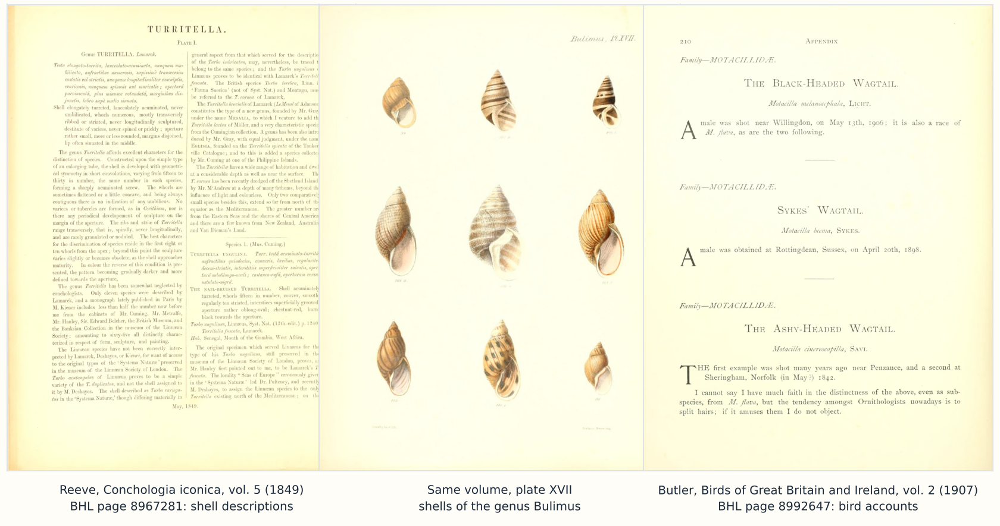
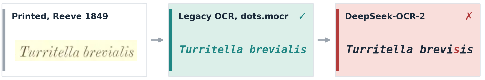
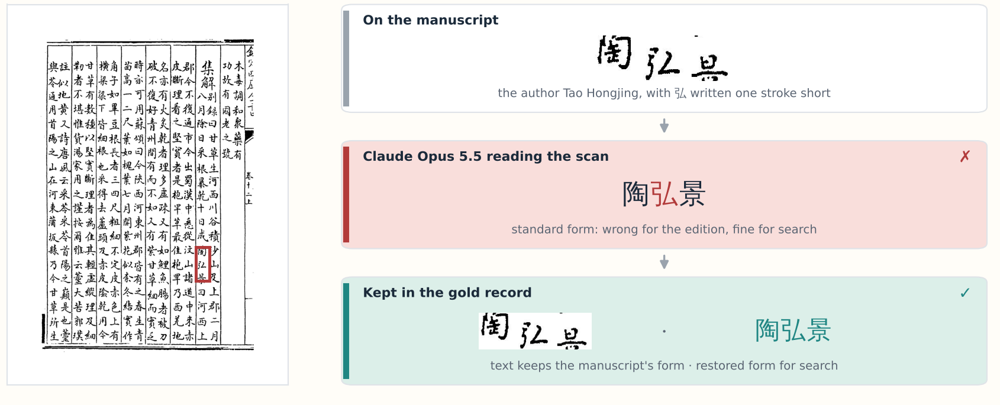

01 · Motivation
The pages an agent has to read

Two English books from the Biodiversity Heritage Library (about 64 million scanned pages). Pages: BHL via IMPACT, CC BY 3.0; plate: Internet Archive, public domain.
02 · Methodology
An agent's five steps, tested one by one
Highlighted: where most trust was lost.
16 test pages read three ways (old OCR, modern OCR, expert text); 607 labels made before any model output; plan frozen before testing. Design follows Lei, Docherty & Cooper (2024).
Same chain in a materials paper (analogy, not tested)
Read: Fe₂O₃ comes out as Fe2O3, µm as um.
Link: "TiO₂" without its phase is a genus without its species.
Scope: measured is not the same as cited.
03 · Results
What broke, and how badly
Read · same 16 pages, three texts

Better OCR fixed most of it: value F1 0.60–0.64 → 0.95–0.98.
A wrong name that looks right

Read right, still not linked

04 · Case study: 本草綱目
Same name, two right answers

A 1578 Chinese pharmacopoeia in an 18th-century manuscript copy (exploratory, 6 pages). Claude reads the scan but writes modern forms: 88% of names letter-perfect, 98% if variant forms are allowed. The agent has to know which one its user needs. Scan: CADAL, public domain; text: Kanseki Repository, CC BY-SA 4.0.
05 · Conclusion
Five takeaways for agent builders
- Check that names survive OCR, not the page error rate.
- Make the agent quote its source. It cost no recall and leaves an audit trail.
- Two agents agreeing is not evidence.
- Test linking on its own: names change, databases move on.
- Write down what counts as a datum before you score anything.
Limits: two English printed books (1849, 1907) and a six-page Chinese pilot; other languages, layouts and handwriting untested.
 ai4s.fyi
LinkedIn
ai4s.fyi
LinkedIn